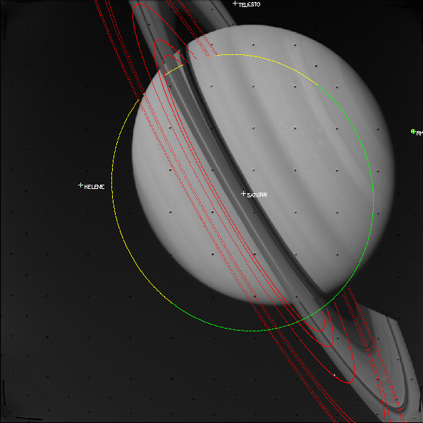

w10n_pds_example.pro
batch fileW10N_PDS EXAMPLE
Created by Vance Haemmerle from PG example
This example demonstrates various capabilities of W10N_PDS reading it gets the same image as the PG example but gets it from the PDS imaging website
This example file can be executed from the shell prompt in the ominas/demo directory using:
ominas w10n_pds_example.pro <--cas> <--vgr> <--gll> <mission=={cas|vgr|gll}>
or from within an OMINAS IDL session using:
@w10n_pds_example
Missions supported CASSINI ISS, VGR ISS, GLL SSI
Use DAT_READ to read the image and then display the image using TVIM. With DAT_READ, it is not necessary to specify the file format. DAT_READ uses your file type detectors to determine the format, and gets the appropriate reader from your I/O table. DAT_READ returns a data descriptor (dd), which contains all of the data associated with the file. For convenience, it also returns the data array (im) and header (label) in its second and third arguments.
TVIM is called to display the image (im) in a new window with the y coordinate as top-down:
url = 'https://pds-imaging.jpl.nasa.gov/w10n/cassini/cassini_orbiter/coiss_1001/data/1350045294_1350147054/N1350122987_2.IMG'
dd = dat_read(url, im, label)
tvim, im, zoom=0.75, /order, /new
OBTAIN GEOMETRY
This section obtains the geometric information describing the scene. Note that there is no reference to the source of the this information. That is handled by the translator system, which is controlled by a series of translators tables telling OMINAS which translators to use for a given instrument. The translators tables are parsed by DAT_READ, which stores the list of translators in the data descriptor.
If you are using the default demo configuration, then the geometry data are obtained via the NAIF/SPICE translator package and the detached header package. The NAIF/SPICE translators use database files provided by NAIF or by individual projects. The detached header translators read and write geometry descriptors in a text-based file that resides in the same directory as the data file and has the extension '.dh'. Because the detached header translator dh_std_input appears before the Cassini Spice input translator in the default translators table, the descriptors are taken from the detached header if it exists, and if the relevant descriptors are present. Otherwise, they are obtained from the SPICE kernels:
cd = pg_get_cameras(dd) ; CAMERA descriptor
pd = pg_get_planets(dd, od=cd, count=npd) ; PLANET descriptor(s)
rd = pg_get_rings(dd, pd=pd, od=cd, count=nrd) ; RING descriptor(s)
ltd = pg_get_stars(dd, od=cd, name='SUN') ; STAR descriptor for Sun
pd = pg_get_planets(dd, od=cd, $
name=['JUPITER', 'IO', 'EUROPA', 'GANYMEDE', 'CALLISTO'])
ii = where(cor_name(pd) EQ 'JUPITER')
MAKE A GENERIC DESCRIPTOR
Here we go with the generic descriptors again. The story with these things is that long ago before GRIM was summoned from the lowest levels of heck, OMINAS (or MINAS, or NV) was purely command-based. That's what you want because you can always build a GUI on top of it, but it doesn't really work to start with a graphical tool and try to build a command-based system out of that. Therefore, I decided to have mercy on the poor jerks (mostly me up to now) who had to type (really paste) all of this nonsense in. The generic descriptor was therefore spawned as a way to cut down on all the cd=this, pd=that, bx=whatever that tends to go on. So we just shove it all into one structure and all of the PG programs know to look in there if one is given. Any explicit descriptor arguments take precedence, though. So if these things make you happy, then you're welcome. I rarely use them in this way. They live on because it turns out they have amazing utility in other ways. So anyway, it's like this:
gd = {cd:cd, gbx:pd, dkx:rd, ltd:ltd}
COMPUTE OVERLAY ARRAYS
These commands compute the center, limb, and terminator of each planet, as well as the edges of the rings. Note that the terminator is computed using PG_LIMB with the Sun as the observer:
limb_ptd = pg_limb(gd=gd) & pg_hide, limb_ptd, gd=gd, bx=rd, /rm
pg_hide, limb_ptd, /assoc, gd=gd, bx=pd, od=ltd
ring_ptd = pg_disk(gd=gd) & pg_hide, ring_ptd, gd=gd, bx=pd
term_ptd = pg_limb(gd=gd, od=gd.ltd) & pg_hide, term_ptd, gd=gd, bx=pd, /assoc
center_ptd = pg_center(gd=gd, bx=pd)
SET UP FOR PLOTTING
This just makes the calls to PG_DRAW a little easier, since they will need to be repeated every time we change things and recompute. We put all of the POINT descriptors in one array and then make corresponding arrays for the plot parameters:
object_ptd = [center_ptd,limb_ptd,ring_ptd,term_ptd]
colors=[make_array(npd,value=!p.color), $
make_array(npd,value=ctyellow()), $
make_array(2*nrd,value=ctred()), $
make_array(npd,value=ctgreen())]
psyms=[make_array(npd,value=1), $
make_array(npd,value=3), $
make_array(2*nrd,value=3), $
make_array(npd,value=3)]
psizes=1.0
csizes=0.75
plabels=[cor_name(pd), $
make_array(npd,value=''), $
make_array(2*nrd,value=''), $
make_array(npd,value='')]
DRAW EVERYTHING
Cassini result:

Now we can do a nice simple call to PG_DRAW to draw everything:
pg_draw, object_ptd, $
col=colors, psy=psyms, psi=psizes, csi=csizes, pl=plabels

Galileo result:

File attributes
| Modification date: | Wed Aug 29 11:23:52 2018 |
| Lines: | 52 |
| Docformat: | rst rst |